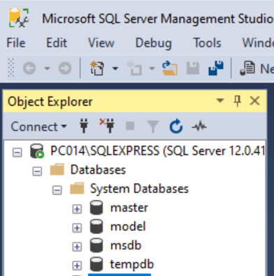
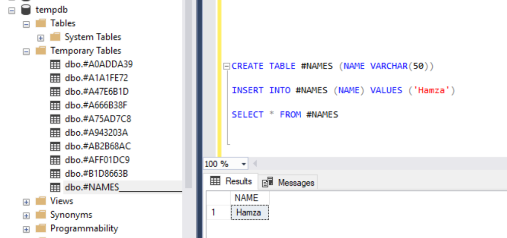

SQL Server'da Sistem Veri Tabanları
master, model, msdb, tempdb
Sql serverın kullandığı 4 veri tabanı bulunmaktadır. Bunlar; master, model, msdb ve tempdb’dir.

Master: SQL server ayarları, Sisteme eklenen veri tabanı bilgilerini, sisteme eklenen login bilgilerini vs. sistemle alakalı ne varsa SQL server bu bilgileri bu veri tabanında tutar. Bir Server klonlanmak isteniyorsa master veri tabanının ldf ve mdf dosyaları yeni serverın master veri tabanının ldf ve mdf dosyaları ile değiştirilebilir. Bu dosyalar üzerinde işlem yapmak için SQL Server’ı durdurmak gerekir.
Model: oluşturulacak yeni veri tabanı için şablondur. Yeni veri tabanı oluşturulduğunda model veri tabının birebir kopyası çıkarılır. Sistemimizdeki her veri tabanında olması gereken tablolar, view’lar, fonksiyonlar ve SP’ler varsa bu veri tabanında oluşturulursa yeni veri tabanı oluşturulduğunda bu veri tabanında da oluşturulur.
Msdb: sql server agent ta yapılan job bilgilerinin tutulduğu yerdir. Job config lerinide geri getirmek için bu veri tabanı kullanılabilir.
SELECT * FROM SYSJOBS
SELECT * FROM sysschedules
Tempdb: Geçici işlemlerin yapıldığı veri tabanıdır. Group by having işlemlerinde bu tablolar kullanılır. temp yapılar session bazlıdır. Query ekranı veya server kapanırsa temp veri tabanındaki veriler kaybolur. Temp veri tabanları başka sessionda kullanılmaz. Her sessionda kullanılmak istenirse ## ile tanımlanır.
